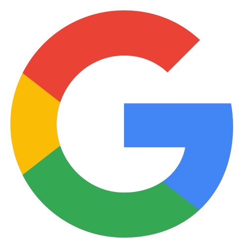

Google client projectMarketing Optimization Specialist
Aug 2025 – Aug 2026
Cognizant, Lisbon | Client: Google (Google Ads advertiser optimisation)
I audited Google Ads accounts with Google account managers, then walked advertisers through the changes in French and English. Markets: France, Spain, the Netherlands, Portugal and the US.
AI Max for Search: 30 days before and after
- Account
- Search, about €56k a month
- My part
- Setup and report
- Year
- 2026
I switched on AI Max for Search across this advertiser's Search campaigns, then compared the 30 days before and after and presented the results to them.
Conversions rose 60% while cost per conversion rose 9%. The extra €41k of spend brought 1,182 more conversions at €34.90 each, or about €5.20 of conversion value for every extra euro.
What to look for
- Spend went from €56,159 to €97,416 (+73%), as the ads showed in 53% more searches.
- Conversions went from 1,982 to 3,164 (+60%).
- Cost per conversion went from €28.34 to €30.79 (+9%).
Brand Search account relaunch
- Channel
- Google Ads, Search
- My part
- Audit and rebuild
- Before
- January 2026
- After
- 27 April – 26 May 2026
The advertiser's brand keywords were switched on but getting no impressions at all. I audited the account, then added more relevant keywords and reworked the ads, assets and landing-page content for each ad group.
The account started serving again in mid-May. By 26 May it had brought in 72 conversions at about €18 each, on €1.3k of spend.
Before, January 2026
What to look for
- Clicks: flat at zero for the whole month.
- Impressions: 0 on every keyword.
- Quality Score down to 2/10, with landing page and expected CTR both below average.
After, 27 April – 26 May 2026
What to look for
- Clicks start in mid-May and reach about 300 a day.
- Quality Score 10/10 on the two main keywords, with all three parts above average.
- Top keyword: 30.43 conversions at €3.04 each.